Яхта
NANULI
Для тех, кто хочет отдыхать в Крыму ярко и насыщенно, мы предлагаем прокат яхт.
К вашим услугам парусная яхта Nanuli, готовая выйти в море из Севастополя, Балаклавы, Ялты или Алушты.
Яхта заберет вас в любой точке побережья Крыма.
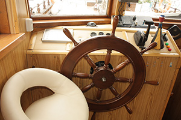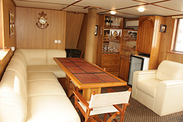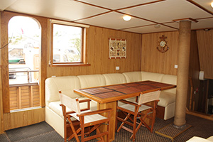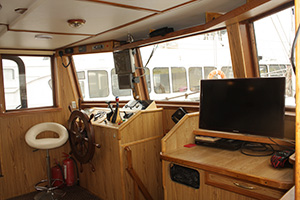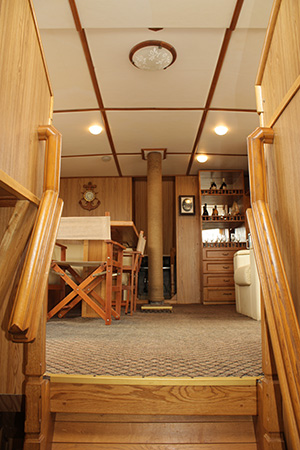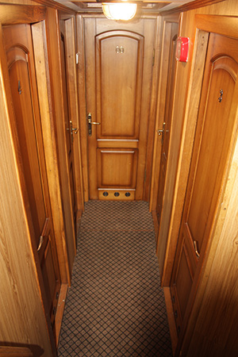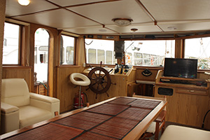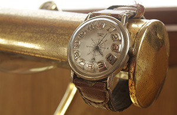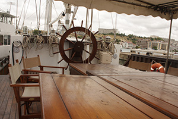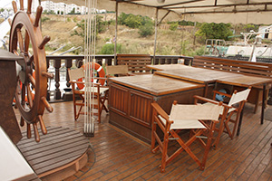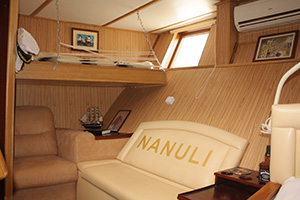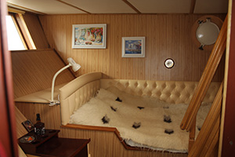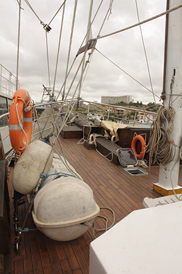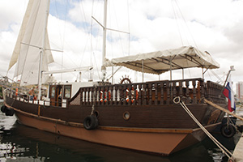
Яхта
| Название |
NANULI |
| Построена |
в 2011 году |
| Порт-приписка |
г.Севастополь |
| Флаг |
Российский |
| Команда |
3 человека |
| Длина |
22 метра |
| Ширина |
5.80 метров |
| Крейсерская скорость |
6-7 уз/ч |
| Вместимость без ночевки |
15 человек |
Оборудование яхты
Картплоттер(современное навигационное устройство) GPS, Эхолот, Радар, ЯНЗ-238 двигатель, 2-е мачты площадь парусов 250 м.
Услуги
- 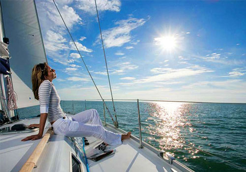
Xождение под парусом
- 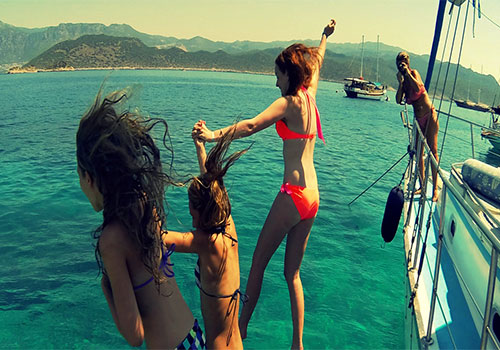
Купание в открытом море
- 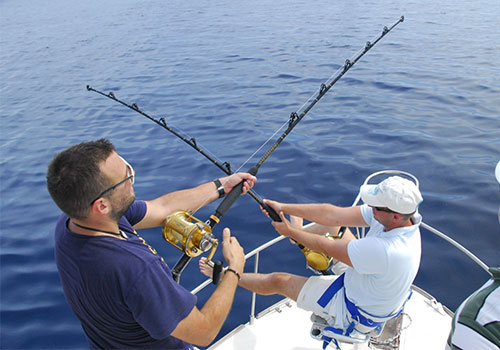
Рыбалка
- 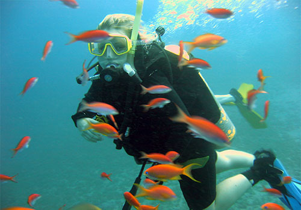
Дайвинг
- 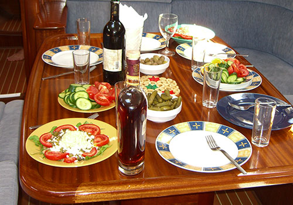
3-х разовое питание
- 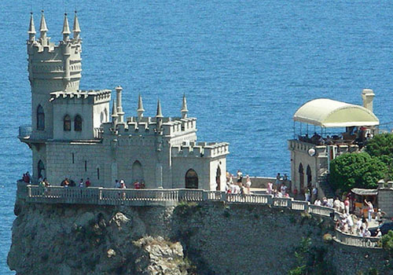
Организация экскурсий на суше во время круиза
- 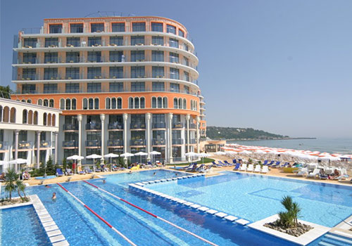
Бронирование отелей для ночлега в городе временной остановки
-
При запросе - трансфер отдыхающих до яхты из любой точки Крыма автотранспортом и/или перенаправления яхты до ближайщего порта расположения отдыхающих
Удобства и оборудование
На борту имеется 5 гостевых кают, рассчитаных на ночлег 8-10 человек, постельное белье и набор полотенец в наличии.
-
Душ с горячей и холодной водой
-
ТВ (DVD,USB-порт)
-
Стиральная машина
-
Кондиционер
-
Камбуз
-
Холодильник
-
СВЧ-печь
-
Магнитофон (CD, USB-порт)
-
Мангал + набор шампуров
-
Надувная лодка 4х местная
Вопросы и ответы
- Есть ли ограничения по возрасту?
- Ограничений по возрасту нет, можно брать с собой детей и пожилых людей, способных подняться на борт яхты.
- Кто управляет яхтой? Можно будет немного порулить?
- Яхтой управляет команда - капитан и матрос. На участках со спокойным движением Вам будет предоставлена возможность немного поуправлять яхтой. Также при желании Вас могут посвятить в азы мореходного дела и управления парусами.
- Кто выбирает маршрут прогулки?
- Маршрут и продолжительность прогулки - почти всегда индивидуальна и зависит от Ваших предпочтений, с небольшими рекомендациями от капитана.
- Как организуется питание?
-
- Вариант 1-й: Взять продукты и готовить самим (на яхте есть мини-кухня и посуда);
- Вариант 2-й: Заказать услуги стюарда (повара) с опытом работы на яхте. Меню и его стоимость оговаривается дополнительно.
- Есть ли на яхте туалет, душ?
- Да, на всех яхтах есть комфортный гальюн (туалет) и возможность помыться в душе.
- Что с мобильной связью, интернетом?
- На борту есть стандартная связь стандарта GSM на расстоянии от берега до 12 миль (20 км). Телефоны стандарта CDMA работают на удалении до 50 миль, т.е. при любой дальности прогулки. Интернета на яхтах нет.
- Можно ли будет поплавать в море, порыбачить?
- График движения Вы выбираете сами. Поэтому можно остановиться в любом месте для купания, рыбалки.
- Что, если яхту не выпускают в море из-за штормовой погоды?
- В этом случае возможен либо перенос прогулки на другое время, либо возврат предоплаты.
- Где происходит посадка и высадка?
- Посадка на яхту происходит по адресу: ул. Приморская, 6 или любое другое место по договоренности, где есть возможность безопастно пришвартоваться. Сюда же прибывает яхта по истечении времени аренды, если не оговорено заранее другое место высадки.